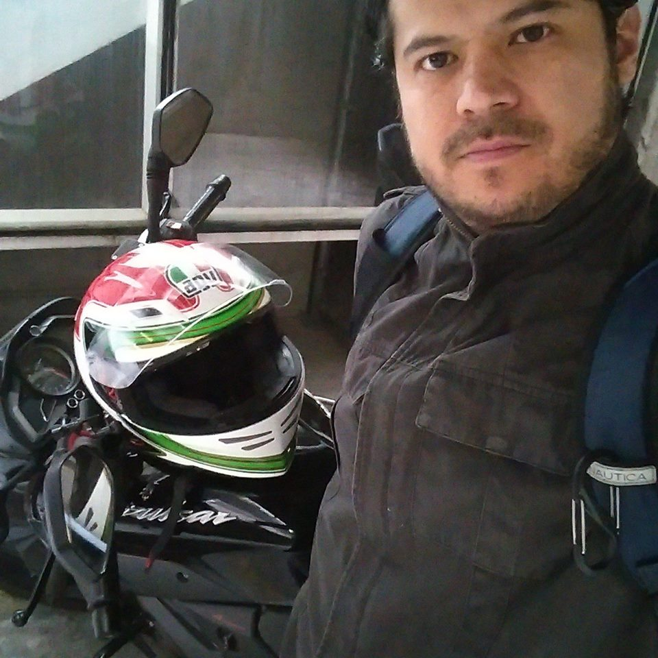

About Me

Passionate about music and technology, I dedicated myself mainly to the management of software development projects, and it always helped me to learn new ways to create web pages, this Bootcamp Yes course represents a great challenge. After all in technology you always have to keep updated, renew or die!
I've also worked in the musical environment, but it's not like I've played music, but I've had a sound and I like to mix, has put several events with an excellent musical taste, it's been like that and they've all been finished really excited. I love sports too, so i believe that i have a really balanced life, i enjoy my work, have time to listen to music and eventually going on vacation to discover new countries and cultures.